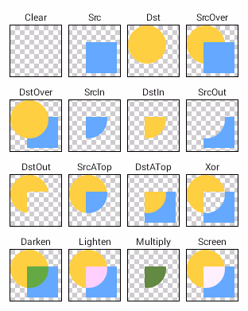

Xfermode国外有大神称之为过渡模式，这种翻译比较贴切但恐怕不易理解，大家也可以直接称之为图像混合模式，因为所谓的“过渡”其实就是图像混合的一种，这个方法跟我们上面讲到的setColorFilter蛮相似的。查看API文档发现其果然有三个子类：AvoidXfermode, PixelXorXfermode和PorterDuffXfermode，这三个子类实现的功能要比setColorFilter的三个子类复杂得多。
由于AvoidXfermode, PixelXorXfermode都已经被标注为过时了，所以这次主要研究的是仍然在使用的PorterDuffXfermode：
该类同样有且只有一个含参的构造方法PorterDuffXfermode(PorterDuff.Mode mode)，虽说构造方法的签名列表里只有一个PorterDuff.Mode的参数，但是它可以实现很多酷毙的图形效果！！而PorterDuffXfermode就是图形混合模式的意思，其概念最早来自于SIGGRAPH的Tomas Proter和Tom Duff，混合图形的概念极大地推动了图形图像学的发展，延伸到计算机图形图像学像Adobe和AutoDesk公司著名的多款设计软件都可以说一定程度上受到影响，而我们PorterDuffXfermode的名字也来源于这俩人的人名组合PorterDuff，那PorterDuffXfermode能做些什么呢？我们先来看一张API DEMO里的图片:

这张图片从一定程度上形象地说明了图形混合的作用，两个图形一圆一方通过一定的计算产生不同的组合效果，在API中Android为我们提供了18种（比上图多了两种ADD和OVERLAY）模式：
ADD:饱和相加,对图像饱和度进行相加,不常用
CLEAR:清除图像
DARKEN:变暗,较深的颜色覆盖较浅的颜色，若两者深浅程度相同则混合
DST:只显示目标图像
DST_ATOP:在源图像和目标图像相交的地方绘制【目标图像】，在不相交的地方绘制【源图像】，相交处的效果受到源图像和目标图像alpha的影响
DST_IN:只在源图像和目标图像相交的地方绘制【目标图像】，绘制效果受到源图像对应地方透明度影响
DST_OUT:只在源图像和目标图像不相交的地方绘制【目标图像】，在相交的地方根据源图像的alpha进行过滤，源图像完全不透明则完全过滤，完全透明则不过滤
DST_OVER:将目标图像放在源图像上方
LIGHTEN:变亮，与DARKEN相反，DARKEN和LIGHTEN生成的图像结果与Android对颜色值深浅的定义有关
MULTIPLY:正片叠底，源图像素颜色值乘以目标图像素颜色值除以255得到混合后图像像素颜色值
OVERLAY:叠加
SCREEN:滤色，色调均和,保留两个图层中较白的部分，较暗的部分被遮盖
SRC:只显示源图像
SRC_ATOP:在源图像和目标图像相交的地方绘制【源图像】，在不相交的地方绘制【目标图像】，相交处的效果受到源图像和目标图像alpha的影响
SRC_IN:只在源图像和目标图像相交的地方绘制【源图像】
SRC_OUT:只在源图像和目标图像不相交的地方绘制【源图像】，相交的地方根据目标图像的对应地方的alpha进行过滤，目标图像完全不透明则完全过滤，完全透明则不过滤
SRC_OVER:将源图像放在目标图像上方
XOR:在源图像和目标图像相交的地方之外绘制它们，在相交的地方受到对应alpha和色值影响，如果完全不透明则相交处完全不绘制